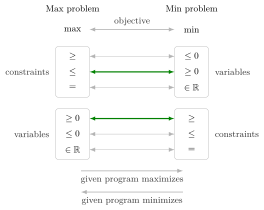

Primal–Dual Transformation Scheme¶
Method¶
The scheme writes down the dual of a linear program in any form without first converting it to standard form. Each variable of the given linear program is either nonnegative (), nonpositive () or free (); any other bound on a single variable, such as , is treated as a constraint (or removed first by the shift used when converting to standard form).
- Write every constraint with the variables on the left and the constant on the right, , or .
- Give each constraint one dual variable . The dual objective is , minimized if the given linear program maximizes and maximized if it minimizes.
- Give each variable one dual constraint : the coefficient matrix is and the right-hand side is the objective vector .
- Read the sign of each and the relation of each dual constraint from the table below. Start in the column of the given linear program's objective and read across:
| Max problem | Min problem | |
|---|---|---|
| objective | objective | |
| constraint | variable | |
| constraint | variable | |
| constraint | variable | |
| variable | constraint | |
| variable | constraint | |
| variable | constraint |
For a maximization linear program, a constraint gives and gives a dual constraint; for a minimization linear program read the table from right to left, so a constraint gives and gives a dual constraint.
Interpretation¶
The table is a shortcut: it produces the same dual as first converting the linear program to standard form and then taking the standard-form dual ; Example 1 below checks this for constraints. It saves the bookkeeping of sign changes and split variables.

Read the figure from the column of the given linear program's objective. The constraints of the max problem pair with the variables of the min problem, and the variables of the max problem with the constraints of the min problem, so constraints and variables trade places. The two green pairs are the standard-form case, a constraint with and with a dual constraint; the grey pairs are the sign-reversed cases and the pairing of equalities with free variables. For a minimization linear program the same lines are followed from right to left, as in Example 3 below.
Each rule comes from the bounding argument behind the dual. In a maximization linear program the weighted sum of the constraints must bound the objective from above. A constraint already points that way, so its weight is nonnegative; a constraint must be multiplied by a nonpositive weight to point that way; an equality may be multiplied by a number of either sign, so its dual variable is free. On the variable side, the combined coefficient must satisfy for every allowed : that means when , when , and when is free.
The scheme reproduces the conversions known from OR Modelling. A free variable split as by the unrestricted variable transformation gives the dual constraints and , which together say . For a minimization linear program, rewriting it as the maximization of by minimization-to-maximization, applying the max column and substituting gives exactly the min column.
The most common error is reading the wrong column. The same symbol gives a nonpositive dual variable in a maximization linear program and a nonnegative one in a minimization linear program (Example 4 below).
Key Results¶
- The table dualizes a linear program in any form; for a maximization primal, , and constraints give dual variables , and free, and variables , and free give dual constraints , and .
- has dual .
- has dual .
- With free primal variables the dual constraints become equalities: has dual .
- The table is symmetric: applied to the dual from the other column, it returns the original linear program (dual of the dual).
Examples¶
1. A constraint in a maximization linear program. For subject to , , the table gives and dual constraints . Check via standard form: has dual subject to , , and the substitution turns this into subject to .
2. Four combinations of constraint and variable types. For a maximization linear program with objective , the duals all have objective and differ only in signs and relations, depending on whether all constraints are or all are , and whether all variables are nonnegative or all are free: (i) , gives , ; (ii) , gives , ; (iii) , gives , ; (iv) , gives , .
3. A minimization linear program in nonstandard form. The linear program subject to , , , has free variables and four constraints. Reading the min column: gives , gives , gives , gives , and both free variables give equalities:
The primal optimum is with value (on the line the objective is , so is taken as large as allowed). The dual point satisfies and and has , the same value, as strong duality predicts.
4. Reading the wrong column. Take subject to , , with optimal value . The min column gives and, from , the dual constraint : subject to , , with optimal value . Reading the max column by mistake gives and , an infeasible linear program; by strong duality the dual of a linear program with an optimal solution has an optimal solution too.
Prerequisites¶
- Dual Linear Program
- Standard Form of a Linear Program
- Minimization-to-Maximization Transformation
- Unrestricted Variable Transformation
Related Concepts¶
- Dual of the Dual
- Weak Duality
- Strong Duality
- Possible Outcomes of a Primal–Dual Pair
- Complementary Slackness (Linear Programming)
- Surplus Variable
Sources¶
- Math VI: Convexity and Optimization · Week 5
- H. E. Nusse and M. Dienstknecht, Math VI: Convexity and Optimization, lecture notes 2026–2027, Section 5.1
Aliases: primal-dual table, dualization rules, dual of a nonstandard LP, Taha's duality table Keywords: \max\Longleftrightarrow\min, \leq\text{ constraint}\Longleftrightarrow y_i\geq0, =\text{ constraint}\Longleftrightarrow y_i\in\mathbb{R}, x_j\in\mathbb{R}\Longleftrightarrow=\text{ constraint}, free dual variable, dual of an equality-constrained linear program Symbols: element of, real numbers, sum
Last updated: 10 November 2026 16:43
Primal–Dual Transformation SchemeDual of the DualDual Linear ProgramStandard Form of a Linear ProgramMinimization-to-Maximization TransformationUnrestricted Variable TransformationWeak DualityStrong DualityPossible Outcomes of a Primal–Dual PairComplementary Slackness (Linear Programming)Surplus Variable